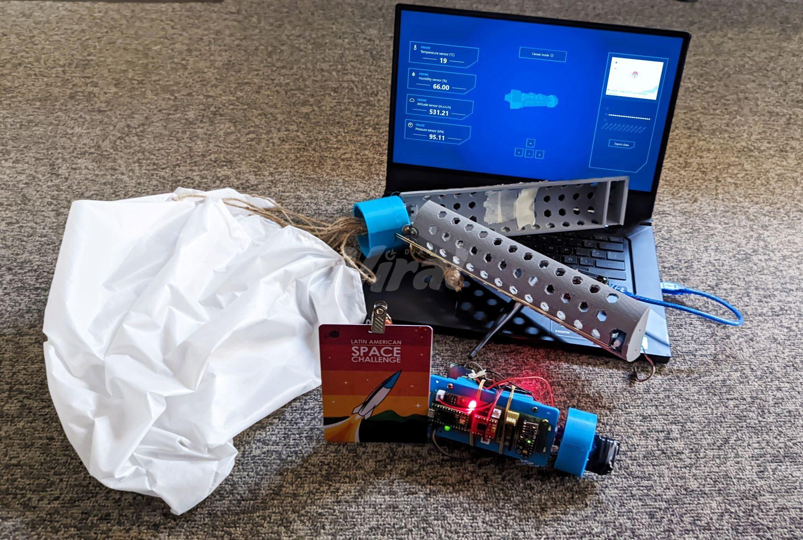

|
Jans Solano I'm a Mechatronics Engineering graduate from Pontifical Catholic University of Peru (PUCP). Currently, I am a Robotics Engineer at Robot.com (formerly Kiwibot), where I work on robot learning for manipulators and the perception stack of wheeled quadrupeds. I previously worked as a Research Affiliate at Yale University, focusing on foundation models for brain image recordings. Before that, I conducted research at the Max Planck Institute for Intelligent Systems in Germany on robot learning for tactile sensing, and at the Bosch Center for Artificial Intelligence in Germany on AI-based robotics demonstrators. |
{kind=link}
Research |

|
Stand, Walk, Navigate: Recovery-Aware Visual Navigation on a Low-Cost Wheeled Quadruped
J. Solano, D. Quiroz IROS Workshop on Wheeled-Legged Robotics, 2025 Paper |
|
|
Adding internal audio sensing to internal vision enables human-like in-hand fabric recognition with soft robotic fingertips
I. Andrussow, J. Solano, B. Richardson, G. Martius, K. Kuchenbecker Humanoids, 2025 Paper / Website |
|
|
Design and Implementation of an Inspection Robot for Crack Detection in Flooded Pipes
J. Solano, J. Cisneros, L. Sarmiento, et al. IEEE INTERCON, 2023 Paper |
|
|
A Comparison Study between Traditional and Deep-RL Algorithms for Indoor Autonomous Navigation in Dynamic Scenarios
D. Arce, J. Solano, C. Beltrán Sensors, 2023 Paper |
Projects |
|
European Rover Challenge
Competition, 2023 |
|
|  |
Latin American Space Challenge
Competition, 2023 |
|
Deep Reinforcement Learning for Arcade Games
Personal Project, 2024 |
|
|
|
Foundation Models for Visual Question Answering
Research Project, 2024 |
Teaching & Mentorship |
Teaching |
Lecturer – ROS2 Specialization Program – Pontifical Catholic University of Peru (PUCP)
Oct 2025 - Jan 2026 Lecturer for two courses: Mobile Robot Navigation and Robot Manipulation. Focus on applied autonomy using ROS2: Nav2, MoveIt. Mentor – Robotics Camp and Hackathon – Mision Tech Aug 2025 Guided high school students through hands-on robotics and programming challenges. Provided technical mentorship on sensors, control, and prototyping. Teaching Assistant – Robotics and Artificial Intelligence – Pontifical Catholic University of Peru (PUCP) Mar 2025 – Jul 2025 Assisted lectures and labs on kinematics, manipulators, autonomous navigation, and AI fundamentals. Supported the design and testing of educational robotics modules. Mentor – Women's Day Hackathon – Teens in AI Mar 2022 Taught participants the basics of machine learning and data preprocessing. Supported student teams in developing socially oriented AI prototypes. |
|
Feel free to use this website's source code as a template for your own academic website. |